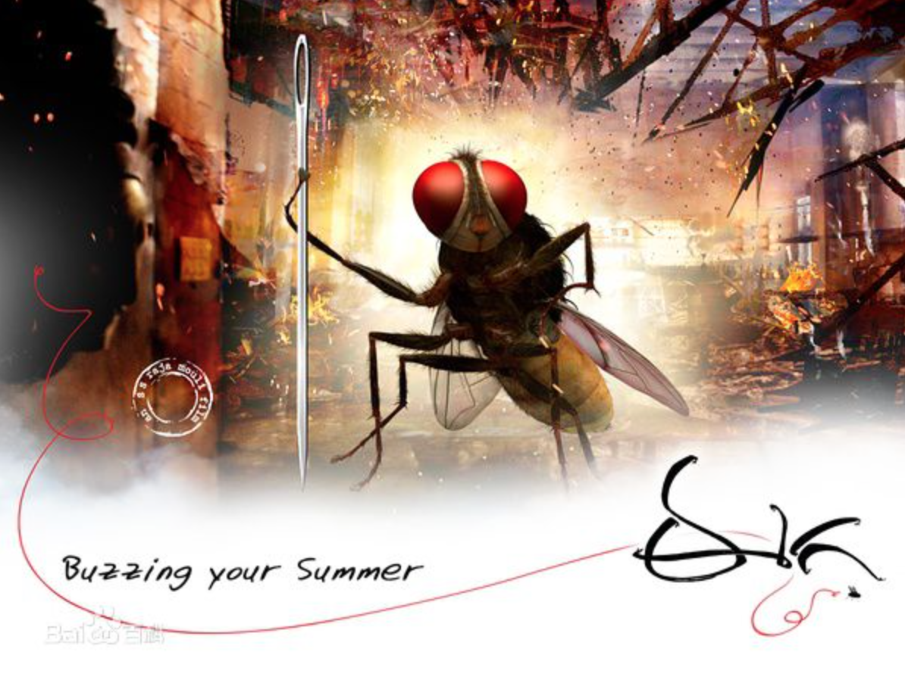

最近是迷上了印度电影，从早些的《三傻》，到《OMG》、《未知死亡》、《爱无止境》、《我的个神啊》…看了很多。感觉阿三的电影都很有内涵，表达宗教与信仰、人性与冲突，穿插的歌曲也都与故事情节衔接的十分自然。

《功夫小蝇》是一部取材新颖的电影，讲述以苍蝇的视觉复仇的故事。电影依旧延续印度招牌式的歌舞，前十几分钟讲述男女的爱情，音乐穿插的自然，场景唯美，拍摄角度自然。印度电影基本都是如此，传递的东西简单，正能量，直指人心，使人影响深刻。
真正剧情有些突兀的是男主角被残害，显得不是太自然。唯美的爱情片瞬间变成了充满血腥的复仇记，不过看了后续的剧情也就适应了（影片十几分钟我都快睡了，纳闷这部片想表达男女温情烂漫的爱情么，被影片的转折惊醒了）。
影片中间主要描述苍蝇如何复仇的种种手段，无论是电影的特效、剪辑还是故事的情节都非常的精彩。
- 这部以电影特效打造的电影主角—苍蝇，展现出的是如此的自然，仿佛就是我们的镜头跟着它飞，跟着它冲出激流，飞翔空中，钻于夹缝。当它跑步、举重锻炼时，就感觉它是那么的可爱。丝毫未看出电影特效的痕迹。
- 更重要的是故事的情节，以苍蝇的躯体赋予人的智商，想着怎么依靠外力去复仇？是的，大部分复仇方式都是匪夷所思，拍案叫好的。故事的情节推进，直到最后的复仇高潮，都仅仅勾住了大家的心，时不时为小蝇叫好，为小蝇捏汗。
最后的结局延续一贯的正能量价值观, 坏蛋被成功复仇。但是结局没有呈现出爱情故事应该有的结局，如苍蝇复活和女主角快乐的生活在一起。也许留有些遗憾大家才能深刻记住，不完美也许更好。
总的来说，是很值得看的一部电影。虽然是小成本的电影，但表达的价值观是正向的，影片的构思是非常精妙的。
认准目标，坚定信心，不管困难有多强大，发挥自己的优势，一定能做到！